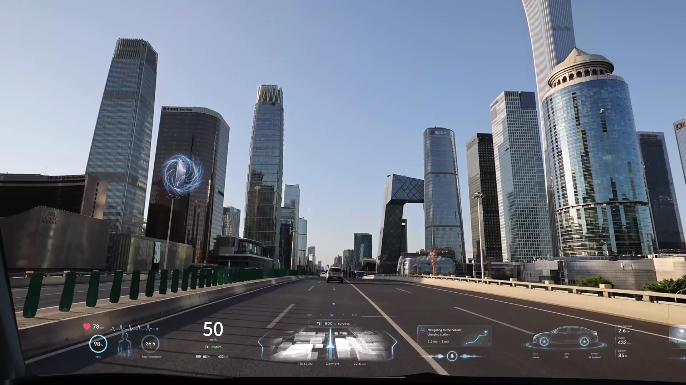
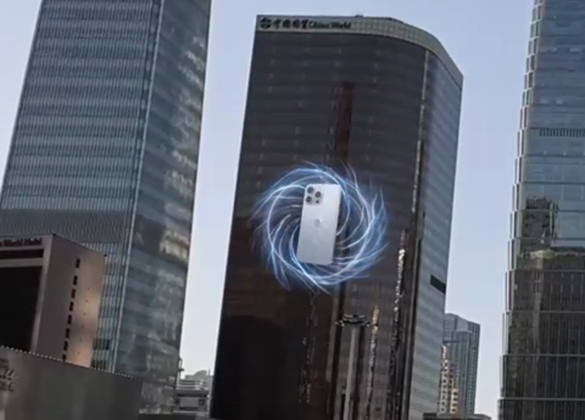
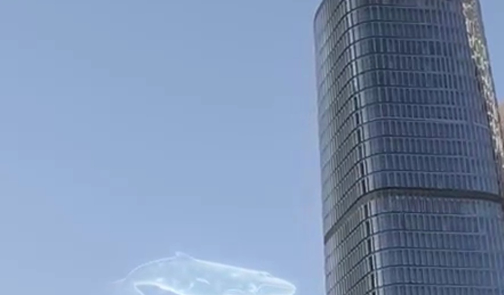
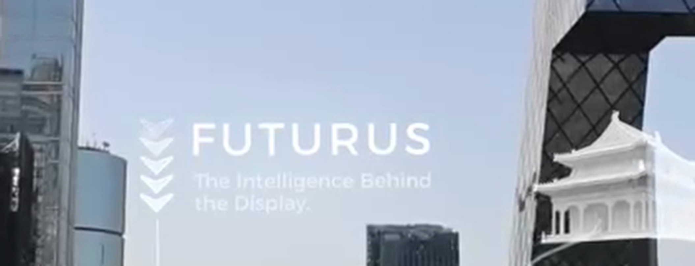

第 0 章 · 痛点

传统广告 = 侵入式的打断。用户被包围、被打扰，本能地想躲开。
今天的广告，为什么招人烦
弹窗、糊脸的大牌、跳不过的贴片——广告的本质是打断。它抢你的注意力，越多越烦。这是所有广告生意的天花板：用户讨厌它。
所以问题不是"怎么投更多广告"，而是——能不能有一种广告，用户不但不烦，甚至还欢迎它？
这份说明用 1 分钟讲清楚：那支视频里的炫酷 AR，背后到底是一门什么样的生意。
FUTURUS — The Intelligence Behind the Display
↓ 往下滑
弹窗、糊脸的大牌、跳不过的贴片——广告的本质是打断。它抢你的注意力，越多越烦。这是所有广告生意的天花板：用户讨厌它。
所以问题不是"怎么投更多广告"，而是——能不能有一种广告，用户不但不烦，甚至还欢迎它？
在高阶辅助驾驶 / 自动驾驶里，你的双手和注意力被释放出来。我们把广告搬到驾驶余光区——道路两侧、城市天际线上，像光影艺术一样自然浮现。


只在余光区、道路两侧呈现，中央视野始终留给路面。
融入城市天际线的全息光影，是享受而不是打扰。
不被反感的广告，品牌才愿意买单。这本身就是收入。
视频旁白 · 第一拍 过去的广告是打断、是打扰，没人喜欢。而当你的注意力被自动驾驶释放，FUTURUS 把广告放进你的驾驶余光区，像光影艺术一样自然浮现，不挡视线、不打断你。仅凭这一点，我们就创造了一种全新的媒介：用户不抵触、品牌愿买单——它本身就能带来收益。
余光区不只是放广告的地方，更是 AI 的试探场。它看你的目光停在哪、掠过哪，再加上你的实时状态，用每一次反应，让自己越来越懂你这个人。


试探 → 看你的反应 → 学习 → 更懂你，循环往复。每一圈，AI 都更准一点。
就像钢铁侠的贾维斯——你看不见它的脸，但它无处不在。在 FUTURUS 里，贾维斯是底部 HUD 中控里的「语音助手」：一颗声纹光球，像车里的 Siri 一样待命、听你说、为你做。原片右下角那个麦克风 + 声纹波形，就是它现成的「家」——我们只是给它起了名字、让它活过来。


底部 HUD 中控的语音助手声纹光球，低调待命。
光丝从你的目光、心率流向核心。
核心向余光区射出光流，AR 内容浮现。
你反应后光流回到核心，∞ 网络变亮。


广告越来越精准——精准到最后，它推给你的已经不像广告：是你正缺的那次充电、你一直想去的那家店、你此刻刚好想要的东西。广告，变成了服务。

视频旁白 · 第二拍 我们真正的核心，是一套读懂人类意图的 AI。它在你的余光里轻轻试探，用你的每一次反应，让自己越来越懂你。于是广告越来越精准，精准到它推给你的已经不像广告——是你刚好需要的东西。广告，变成了服务；推送，变成了「刚好你需要」。你越用，它越懂你；它越懂你，你越离不开它。
这就是飞轮：用得越多 → 数据越多 → AI 越懂你 → 服务越精准 → 你越离不开 → 用得更多。别人没有你的数据，也炼不出你的模型。


不被打扰，还得到刚好需要的服务。
前所未有的精准触达，广告即转化。
数据共享、差异化体验、互惠共赢。
这么细腻的余光区全息显示，是硬技术壁垒。
飞轮越转越聪明，领先到车企自研都不划算。
不绑死任何品牌——任何车都能装上这个懂你的 AI。

原片的每一帧，其实都在讲这门生意——只是贾维斯还没「显形」。下面用原片截图逐条对照：每个叙事点对应哪一帧、怎么让贾维斯把它演出来。
原片：AR 内容在道路两侧楼体浮现，中央视野留给路面。
→ 让贾维斯的光流从核心射向两侧建筑，把「不挡视线」演明白。
原片：底部生命体征 HUD（心率 / 血氧 / 体温）。
→ 这些不是装饰，是贾维斯的输入；加一道光丝从生命体征流向核心。
原片：涡旋「抛出」一台 iPhone 的动作。
→ 这正是贾维斯的「试探」；加注视捕捉光效 + 学习光流回到核心。
原片：运动鞋（懂你爱跑）、最近充电站（任务服务）。
→ 内容越来越精准，「广告」过渡成「刚好你需要的服务」。
原片：中国尊上的无限符号 ∞。
→ 正好做贾维斯「持续学习」的母题：每转一圈，它更懂你一点。
不是卖一块更炫的玻璃，
是做车里那个最懂你的 AI。
FUTURUS · THE INTELLIGENCE BEHIND THE DISPLAY